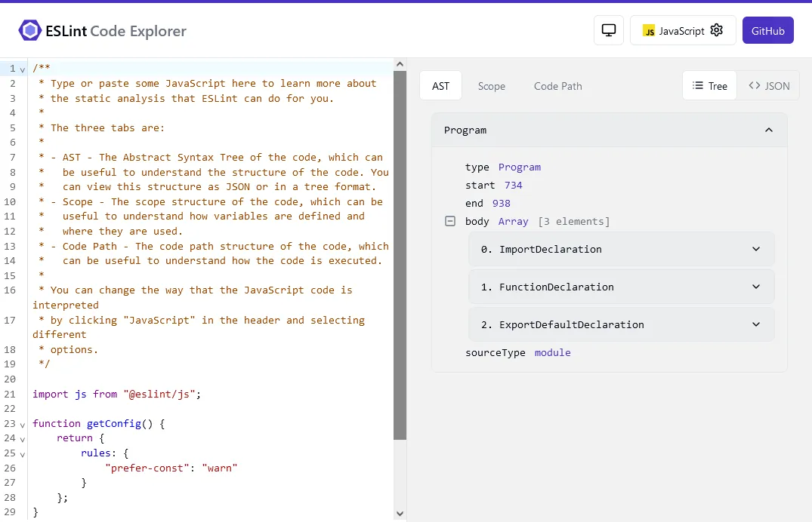

HaoTian · 2024-10-05 21:24:15
最近，Eslint 正式宣布已支持 JSON 和 Markdown 的 Lint 检查。
通过@eslint/json插件，可以对 JSON、JSONC（带注释的 JSON）和 JSON5 进行解析和检查。要开始使用，首先通过 npm 安装插件：
npm install @eslint/json -D
然后，更新配置文件：
import json from "@eslint/json";
export default [
{
plugins: {
json,
},
},
// 配置JSON文件检查
{
files: ["**/*.json"],
language: "json/json",
rules: {
"json/no-duplicate-keys": "error",
},
},
];
@eslint/markdown插件是eslint-plugin-markdown的升级版，专为 CommonMark 和 GitHub Flavored Markdown 设计。安装方法如下：
npm install @eslint/markdown -D
配置 ESLint 配置文件：
// eslint.config.js
import markdown from "@eslint/markdown";
export default [
{
files: ["**/*.md"],
plugins: {
markdown,
},
language: "markdown/commonmark",
rules: {
"markdown/no-html": "error",
},
},
];
@eslint/json和@eslint/markdown插件将源代码解析成 AST，然后遍历 AST 来执行规则。这与 ESLint 处理 JavaScript 的方式相同，只是 AST 的格式不同。JSON 使用 Momoa AST，而 Markdown 使用 mdast。为了检查不同的 AST 格式，Eslint 推出了代码探索器。
ESLint 代码探索器让你能够查看和探索不同语言的 AST，以辅助创建自定义规则。对于 JSON 和 Markdown，将看到一个可展开的 AST 视图，而 JavaScript 则提供了更丰富的信息，包括作用域和代码路径。
